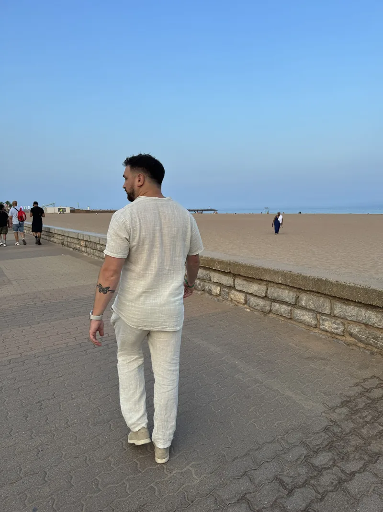
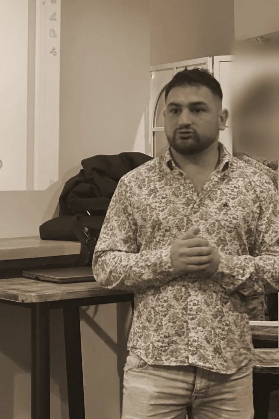

Banquier le jour. Entrepreneur le soir.
Tu as envie de voyager plus, ou de construire quelque chose à côté de ton travail ?
Je fais les deux depuis 2021, sans quitter mon emploi. Ici, je te montre comment, à ton rythme.
On en parle ? Découvrir mes activitésÀ force de côtoyer des entrepreneurs, j’ai voulu me lancer à mon tour.
J’ai grandi avec une idée assez simple du travail : pour moi, l’avenir passait par le salariat. Puis, à la banque, j’ai rencontré des entrepreneurs. À force de les écouter parler de leurs projets, j’ai eu envie d’en monter un à moi.
En 2021, un ami m’a parlé d’une activité en ligne autour du voyage. J’étais sceptique. Ce qui m’a décidé, c’est que je pouvais essayer tout en gardant mon emploi. Aujourd’hui, j’aurais bien aimé découvrir ça plus tôt.
Lire mon histoireEt toi, qu’est-ce qui t’amène ?

Tu as un voyage en tête ?
Gagne du temps sur tes réservations en retrouvant les offres à tarifs préférentiels au même endroit.
Explorer côté voyage →
Démarrer ton activité
Découvre comment entreprendre à ton tour et avancer à ton rythme, à côté de ton activité actuelle.
Découvrir l’activité →La liberté n’est pas réservée
à ceux qui semblaient
y être destinés.
Guillaume Bru
Avant qu’on en parle.
Est-ce que je peux utiliser la plateforme uniquement pour voyager ?
Oui. Tu peux réserver tes séjours et profiter des tarifs membres sans vendre ni recruter.
Combien coûte l’accès à la plateforme de voyage ?
Ça dépend de ta façon de voyager. Il existe plusieurs formules. Je te montre ce que chacune inclut, son coût à l’inscription et les frais à prévoir ensuite. On regarde ensemble laquelle a du sens pour toi, selon tes voyages et ton budget.
Comment se passe notre premier échange ?
Tu me racontes ce qui t’amène. Si tu as un voyage en tête, on part de ta destination et de tes dates. Si c’est l’activité qui t’intéresse, on parle de ton projet, du fonctionnement et des coûts. Tu poses tes questions et tu décides de la suite, à ton rythme.
Qu’est-ce qui
te donne envie ?
Un voyage en tête ou une activité à construire ?
Choisis ce qui t’intéresse. On en parle ensemble.